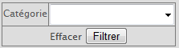
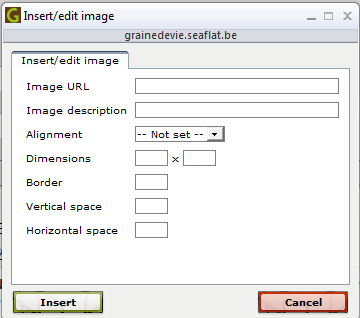
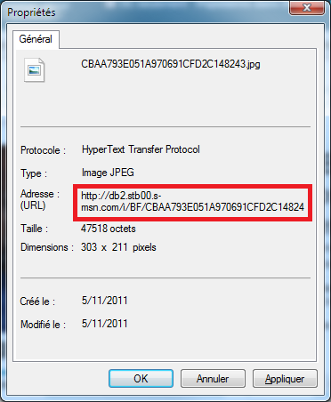

Cette page permet d’ajouter ou de supprimer des pages éditables.
Le sélecteur suivant permet de filtrer les pages par catégories : 
L’ordre des pages au sein d’une catégorie peut être changé à l’aide des boutons et .
Une page peut être modifiée à l’aide du bouton ou supprimée à l’aide du bouton . Il est cependant judicieux d’éditer la page et de décocher la case « visible » au lieu de supprimer la page afin de pouvoir revenir en arrière en cas d’erreur.
Une nouvelle page peut être créée à l’aide du bouton .
Pour chaque langue, il faut indiquer si on veut que la page soit visible ou non ainsi que le titre dans cette langue.
L’édition des pages se fait via un éditeur « WYSIWYG », c’est à dire un éditeur où l’on visualise immédiatement le résultat final.
L’usage correct du « format » de texte est recommandé. Ceci permettra d’homogénéiser le site (tous les titres de même niveau auront la même taille, couleur, et ainsi de suite). Pour cela il faut, après avoir sélectionné un titre par exemple, choisir son niveau dans le sélecteur contenant les options « paragraphe », « heading », …
Pour insérer une image, il faut qu’elle soit hébergée sur un site internet (ça peut être celui de Graine de Vie). Une photo peut être hébergée sur le site via la page « Photos » ou « Multiple photo upload ».
Pour insérer l‘image, il faut disposer de l’adresse URL de l’image et cliquer sur le bouton . Cette fenêtre s’ouvrira alors :

L’URL correspond au lien de l’image. Pour obtenir le lien d’une image avec Internet Explorer, il faut faire un clic droit sur une image et cliquer sur « Propriétés ». L’URL apparait ensuite dans cette fenêtre :

Astuce : pour retrouver une photo envoyée sur le site, on peut passer par la page « Photos ».
L’URL est le seul paramètre indispensable. Les autres paramètres peuvent cependant être utiles :
« Image description » permet de déterminer le message qui s’affichera dans la bulle d’information lorsque l’image est survolée.
« Alignment » permet de choisir l’alignement voulu.
« Dimensions » permet d’imposer une taille à l’image (attention à garder le ration hauteur/largeur pour éviter de déformer l’image), ceci peut être utile si une image est trop grande.
« Border » permet d’ajouter un cadre à l’image (la taille est entrée en pixels).
« Vertical space » et » Horizontal space » permettent d’imposer un espace autour de l’image.